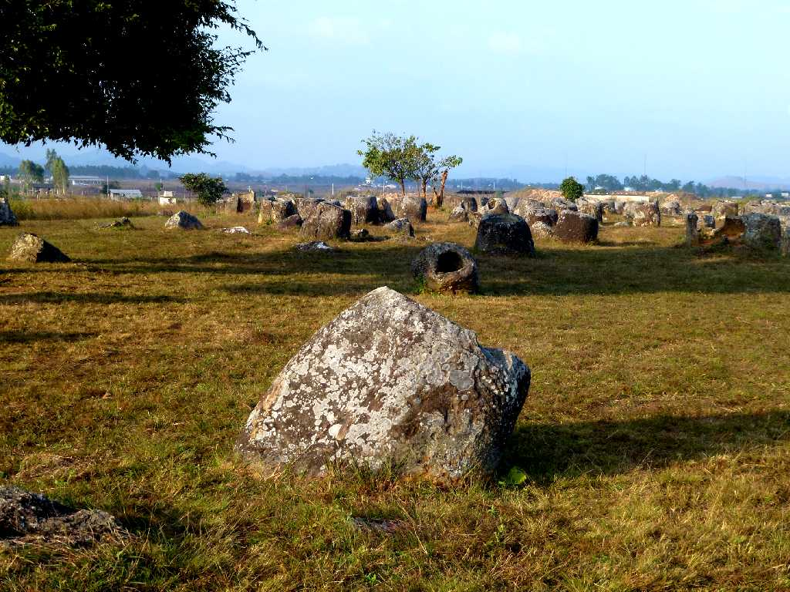
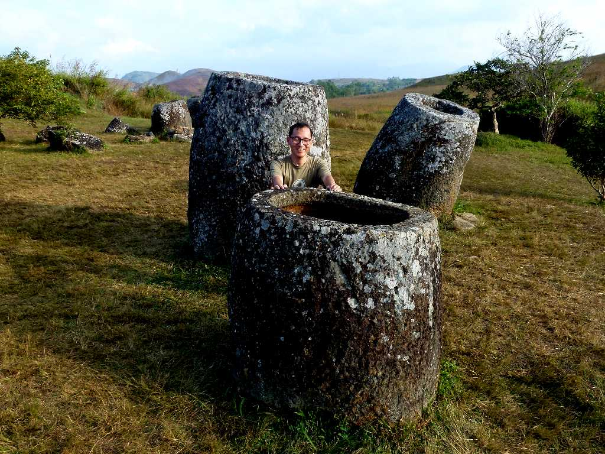
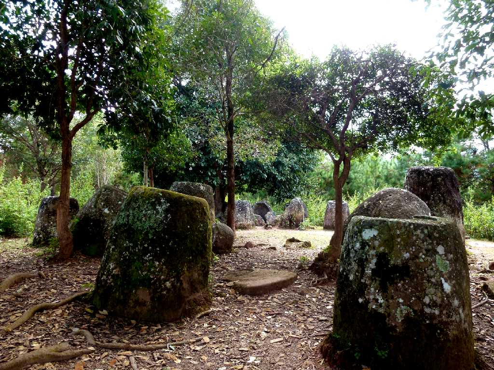
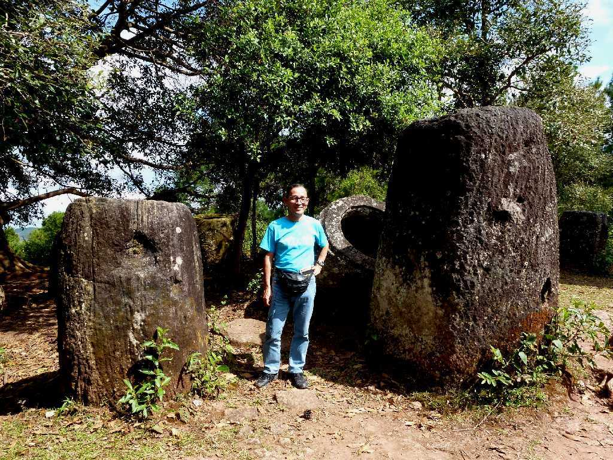
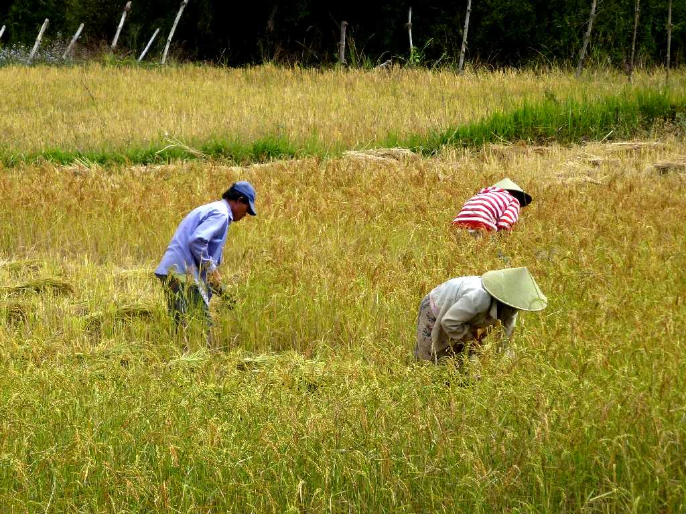
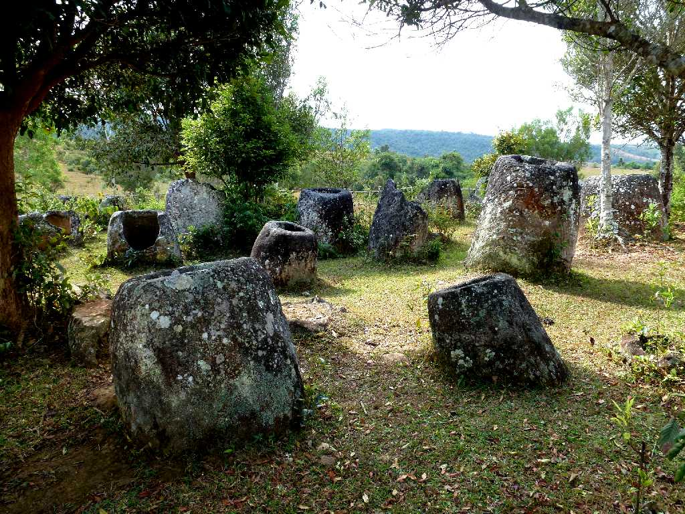
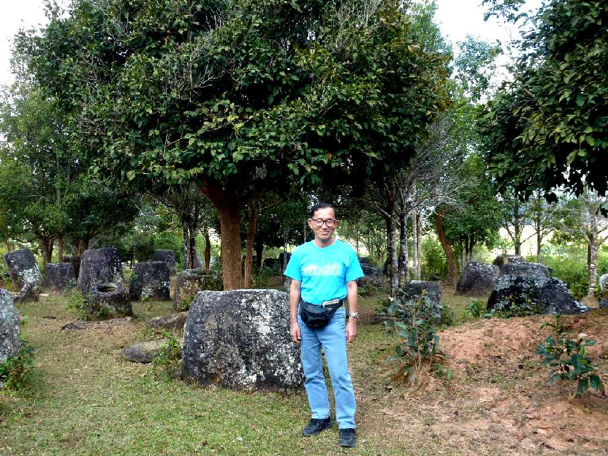

Jars Site 1 Xieng Khouang Phonsavan
ジャール平原に点在する不思議な石壺群

November 8 2011 Jars Site 1

Jars Site 2
第二サイトは林の中に点在している

November 9 2011 Jars Site 2

Near Jars Site 3
第三サイトは最近一部地雷撤去が終わり公開し始めたところで入口から現地まで田畑の狭いあぜ道を歩く

Jars Site 3

November 9 2011 Jars Site 3